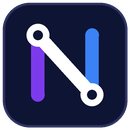

NEXO TVPlayer de IPTV para Android TV, TV Box e Fire TV. Você entra com os dados (servidor, usuário e senha) que o seu provedor passou.
Baixar NEXO TV para Android TVInstalar na TV pelo Downloader
- Na loja da TV (Google Play ou Amazon), instale o app Downloader.
- Abra o Downloader e permita que ele instale apps, se a TV pedir.
- No campo de endereço, digite
lanicchio.github.io/nexo-tv-downloade clique em Go. - Clique em Baixar NEXO TV e depois em Instalar.
O NEXO TV é só um player: não fornece, vende nem transmite canais ou conteúdos. Use apenas listas que você tem direito de acessar.